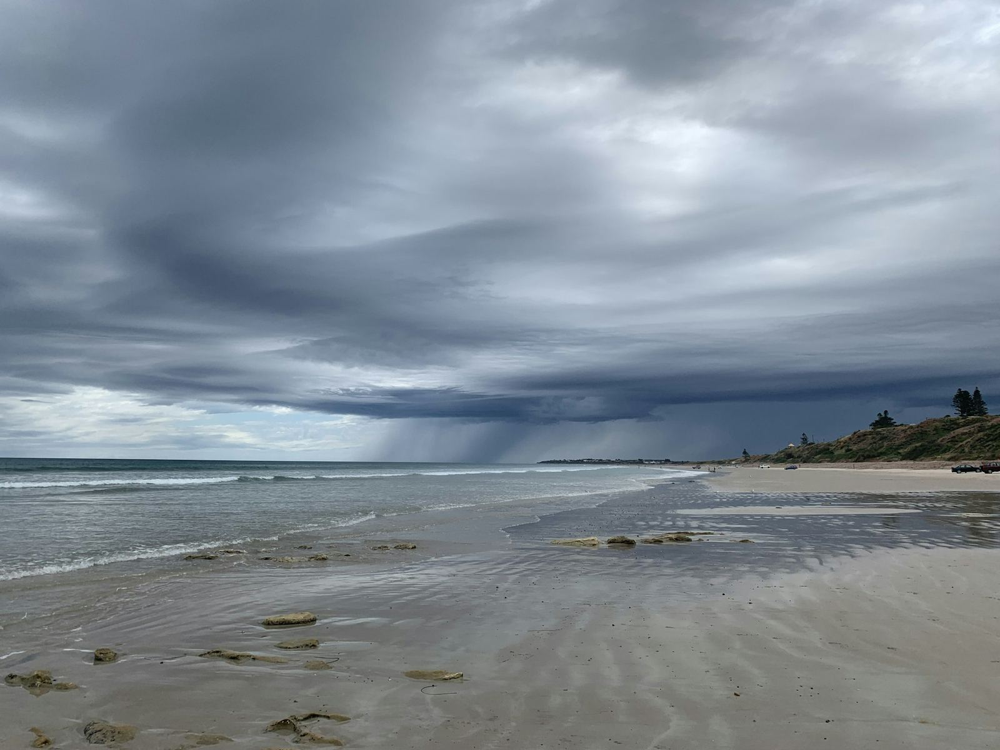

Independent public record project. Sources linked throughout. Last reviewed October 2026.

Beach Nourishment
The erosion control line, and the limit already written into the settlement.
The erosion control line
An erosion control line is a surveyed boundary set before a beach restoration project. Once the survey is recorded, title seaward of that line is deemed vested in the state. Title landward stays with the upland owner. Sand added landward of the pre-project line remains the upland owner's, and is subject to a public easement for traditional uses of the sandy beach. The statute says the state is not trying to take land it does not already hold.
Section 161.141
Section 161.191
Section 161.161
The settlement limit
On a signed 2023 settlement beach, the 20-foot Transitory Zone cannot extend landward of an existing erosion control line between Topsail Hill Preserve State Park and the Okaloosa County line. This record does not say where an erosion control line is recorded.
Settlement terms on the Timeline
Chapter 2025-178, section 2
Section 2 is a separate shortcut for some Gulf counties. It says certain restoration projects do not require a public easement, and that additions seaward of the erosion control line remain state sovereignty lands. The act does not name Walton County. This page does not treat Walton County as covered by section 2. The population estimate and the municipality count were not checked.
Section 1 of the same chapter repeals section 163.035. That repeal is on the Timeline. The act does not mention, vacate, or preserve the 2023 settlement or the dismissals.
SB 1622
Chapter 2025-178
Related: wet sand beach rules and the beach access documents.